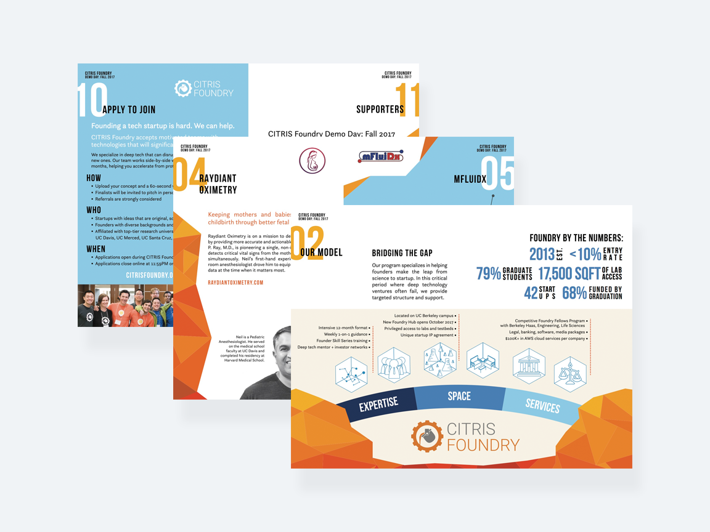
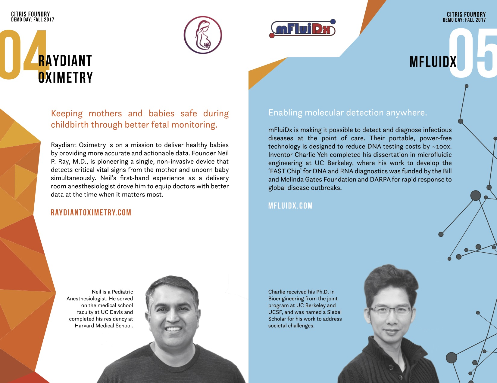
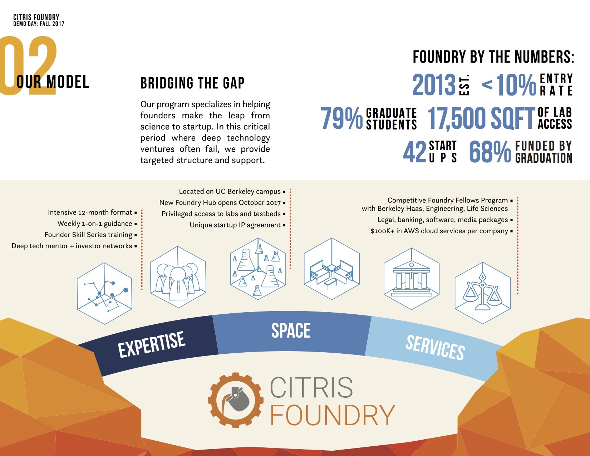
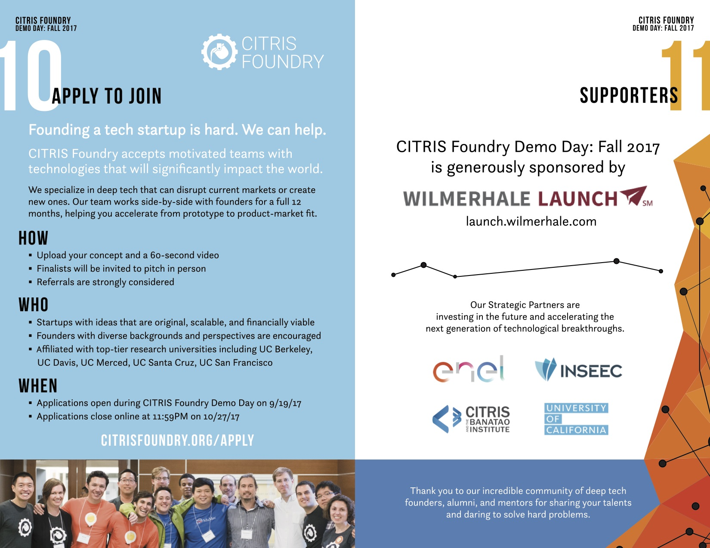

- Introduction
- Objective
- Process
- Full Booklet
Cathleen Jia
View All >
Index
CITRIS Foundry Booklet Design
Joanne Lin and I designed a booklet for CITRIS Foundry's Fall 2017 Demo Day. Foundry is UC Berkeley's deep tech startup accelerator.
Objective
Working part time at the startup accerlator, one of my major projects was marketing and visual design for this season's demo day. This was a day when the current cohort of startups along with past alumn startups pitch their product to an audience of venture capitalists and investors.
Our main objective with this booklet was to provide a brief overview of each demoing startup along with their contact information, as well as inform potential founders about our program.
Design Thinking
Aside from our main objectives with this project, we also wanted to create a booklet format that could be recycled from season to season. This meant tying in the branding of the accelerator and being recognizable, without being a temporal design.
Our base color palette was limited to orange, as this was Foundry's branding. From this we chose a contrasting color palette of blue and orange.
Foundry was built off the tagline "Founder's First", so this was a central theme to how we designed the booklet. We wanted to draw attention to the not only the demoing startups but also their founders. Seeing as we had a short timeline to work with, we could not aquire high quality and matching headshots for all the founders. Instead, we compromised and used black and white cutouts of the founders.
Marketing to potential founders
One of the key pages in this booklet was to be a summary of what Foundry can provide for founders. We wanted to convey why choose Foundry as opposed to competitors and what Foundry has to offer. This became an abstract visual of 2 boulders being bridged by an arc of Foundry services. The boulders tie back to Foundry's philosophy and helping engineers launch their business, and thus bridging tech with entrepreneurship.
We also wanted to inform potential founders of the application process, leaving them with a call to action.
 View Full Booklet Here
Click Here to View.